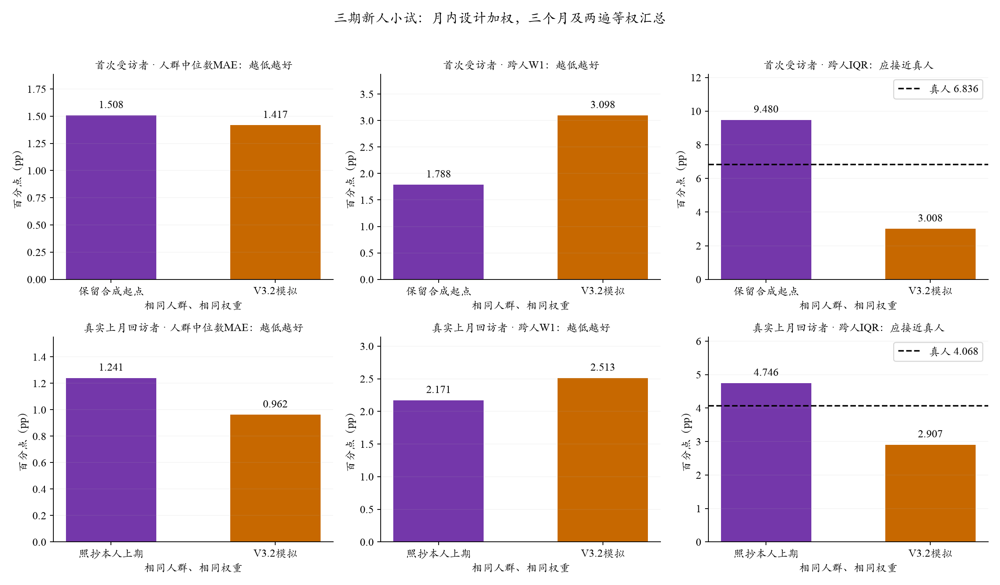
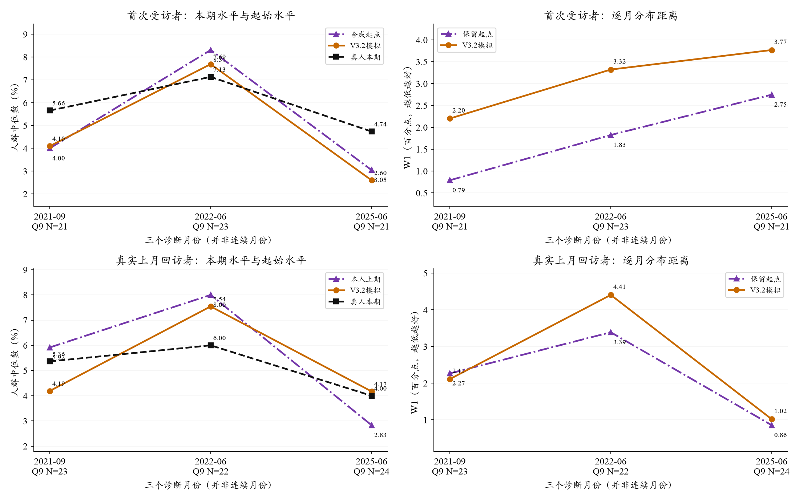

2026-10-22 · DeepSeek V3.2 / SiliconFlow FP8 · 历史条件重建诊断
新受访者没有本人历史时，近期合成起点能否支持模拟？
本轮完成三个诊断月份、每月24新人＋24回访者、各两遍。分别检查起始信念经过LLM更新后，中心和分布如何变化；不是全国准确度，也不是初始化方法的因果实验。82个月大批次继续暂停。
一、实验设计
新人用相邻上月匿名首次受访者的联合Q8/Q9构造起点；回访者保留本人真实相邻上月回答和更早摘要。人口、新闻、价格和政策模板原样复用。三期为2021-09、2022-06、2025-06，全部是已接触过数据的月份。每组24人的抽样波动较大，两遍只是相同人的重复生成。
两阶段抽样权重保持原设计；不使用本期答案挑人或调参。新人“保留起点”是统计基线，不能称照抄其真实上月信念。回访者的人口和信息也可能不同，两组成绩差不能归因于初始化。
二、主要结果
- 首次受访者：相对保留起点，中心MAE变化 -0.091pp，W1变化 +1.310pp（负值表示改善）。
- 真实上月回访者：相对保留起点，中心MAE变化 -0.278pp，W1变化 +0.342pp（负值表示改善）。

来源：冻结评价缓存。每月设计加权，三期×两遍等权；误差单位为百分点。IQR与真人比较，并非越大越好。
中心来自每人Q9十档拟合密度的均值，再取跨人的加权中位数。个人MAE描述模拟值与该人本期回答的差距；随机合成起点没有识别新人的个人潜在信念，因此优先解读群体水平和分布。
三、哪些月份出现差距？

来源同上。水平曲线为两遍中位数的均值；主MAE每遍先取绝对误差再平均，二者不应直接互算。横轴为三个分散月份。
四、这轮能够说明什么？
近期供体解决了旧方案跨多年借用信念的问题，但供体的信念仍不是新人的真实先验；上期总体一致也不能保证本期分布一致。LLM更新是否压缩或扩大差异，应结合起点、真人与模型三者逐月比较。
本轮没有“新人不加起点”的随机对照，也没有改变供体或新闻分配种子。即使优于保留起点，也不能独立识别合成先验或新闻的贡献；即使较差，也不能推出新人没有信念惯性。三个月的小试不能决定最终全国误差或贝叶斯扩展参数。
有效样本、其他指标与敏感性
首次受访者：固定Q9支持65个人月，Q8支持69个人月；仅有效回包共同支持62个人月，中心MAE 1.655、W1 3.193。等人权重中心MAE 1.567、W1 3.266。模型/真人个人概率内部IQR 4.425/7.238pp，通缩档全零比例 39.4%/51.1%。
真实上月回访者：固定Q9支持69个人月，Q8支持72个人月；仅有效回包共同支持66个人月，中心MAE 1.007、W1 2.629。等人权重中心MAE 0.897、W1 2.533。模型/真人个人概率内部IQR 4.500/5.361pp，通缩档全零比例 49.7%/73.6%。
Q8按自己的合法性单独保留；本期Q9缺失/无法计分者没有被另一人替换。完整逐月、逐遍及Q8统计见聚合JSON。
五、调用与可复现性
总尝试288次，原16次与续272次账本保留。首段1次连接失败未补发，用户另授权仅续未发送位置；继续段最多32并发。API报告$0.1827，含未知失败的保守记账$0.2084，上限$1.50。两段执行合计383.3秒，不含准备与分析。无自动重试、供应商回退或扩样。
有效输出敏感性与固定名单后备口径并列，后备状态不冒充新模型回答。本期答案只在隔离评价中读取；真值和旧起点直接复用冻结计分缓存，不重复拟合。
复算入口与边界
评价：scripts/evaluate_sce_entry_pilot.py evaluate；报告：scripts/report_sce_entry_pilot.py。使用新输出目录，已执行账本禁止重启。Core＋Normal扩展未包含在本轮；最终Core人数、贝叶斯模型与全量预算仍待明确。
评价缓存：outputs/sce_entry_pilot_evaluation_20261022_v1。